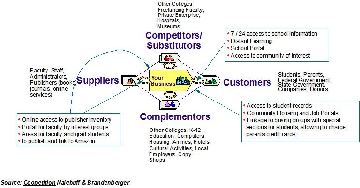

| Guideline: e-business Focal Area ("Killer e") Workshop |
 |
|
1 OverviewWhen developing an e-Business strategy, companies need to think broadly about how e-Business can be used to change the nature of business relationships. It is important to consider customer and supplier relationships and where value is created in these interactions. However, it is also important to look for new and perhaps unexpected opportunities for "co-opetition" with traditional competitors and for new partnerships with complementors of the company’s products, services and relationships. The Focal Area ("Killer-e") Workshop is a technique for rapidly developing a list of "focal areas" that characterize high-value opportunities along these lines for additional exploration. This approach may involve a single workshop or a number of workshops, depending on the scope of the engagement. Each workshop will typically run for one or two days, largely driven by the number of value nets that are constructed and analyzed. Prior to the workshop, executive interviews and other data gathering exercises should be conducted to provide background and input to the workshop activities. The workshop itself is focused on identifying an initial set of high value/high impact areas where e-business can contribute to addressing key opportunity areas and/or achieving strategic business goals, also called "focal areas". To reach this goal, the workshop focuses first on setting a vision for the client’s use of e-Business, and understanding other players in the client’s value net. Once players have been identified, the team lists potential value propositions between players on the value net and then groups these value propositions into potential focal areas. Finally, the team selects focal areas for additional exploration based on agreed-upon criteria. These selected focal areas can also be considered to be hypotheses that will guide future engagement efforts. This technique is performed in the task, Identify e-business Focal Area(s), within the "Define/Refine e-business Direction" set of activities.
2 PurposeThe purpose of the “Killer-e” Workshop is threefold. First, the workshop helps to improve client understanding of e-Business and how it can impact their organization. Second, the workshop provides a mechanism for identifying high impact value propositions across the value chain. Third, the workshop prioritizes and focuses the team on a key set of focal areas to pursue. 3 StepsFirst, the team must prepare for the Focal Area (“Killer-e”) Workshop. This activity includes typical workshop preparation activities such as arranging for facilities, developing an agenda and detailed approach, ensuring that appropriate participants have been invited, and identifying required materials. More importantly, the team must prepare materials that will be used in workshop execution (Executive Briefing Package work product description). Sources of input for these materials include interviews with executives or other key stakeholders, existing client documentation, industry knowledge and research, and other e-Business intellectual capital. The materials to be used in the workshop include:
Second, the team must execute the workshop itself. There are seven steps involved:
Identify value propositions – value propositions identify the benefits that each player delivers to various other players in the value chain through its offerings (the illustration below shows a simple value net with a set of value propositions). They include features of the offerings and the way they are delivered. To perform this step, the team must explore the relationship between the company and all players in the value net, as well as relationships between the other players (customers to competitors and complementors, suppliers to competitor and complementors). This step further updates the Business Environment work product. 
4 Tools and PrerequisitesThe key tools for this approach are:
5 ExamplesSee Reference material for a full example of the Focal Area (“Killer-e”) Workshop outputs. 6 References
Focal Area (“Killer-e”) Exercise and Appendix presentations in the e-Strategy and Capabilities (Competitive Focus)
Knowledge Network database, e-Business Strategy Classes, Basic e-Business Strategy Practitioner
Class. |
| © Copyright IBM Corp. 1987, 2012 All Rights Reserved Property of IBM These materials are intended only for use as part of an IBM engagement |